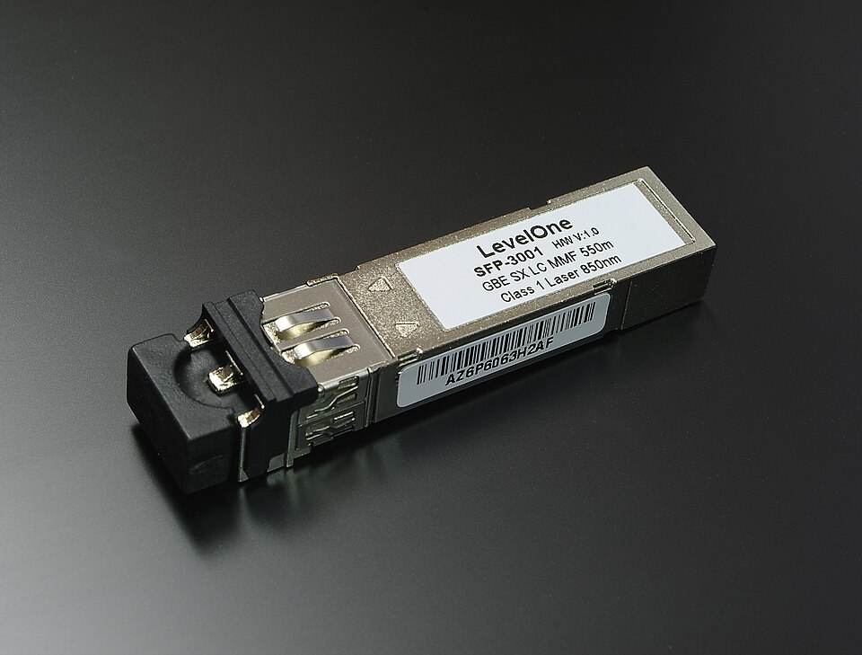
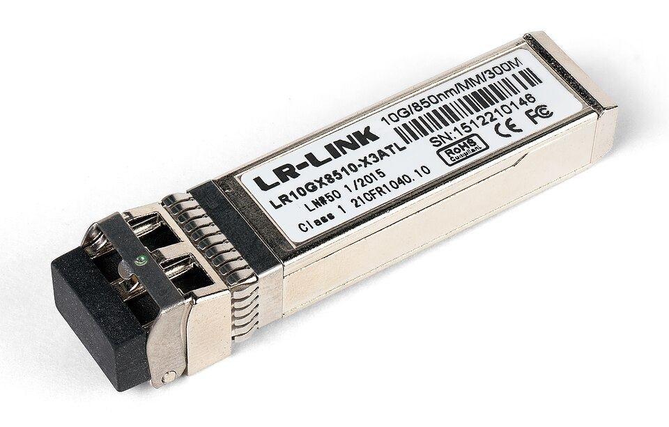
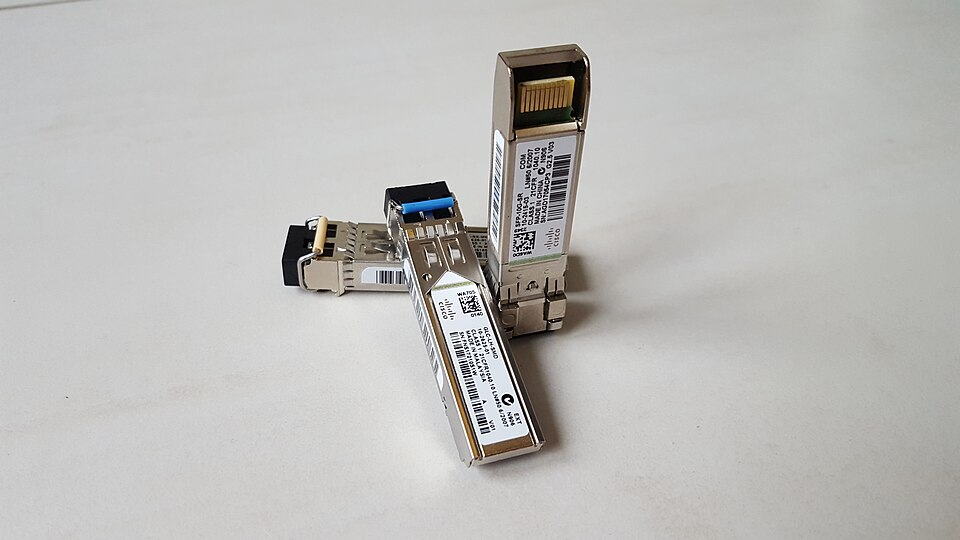
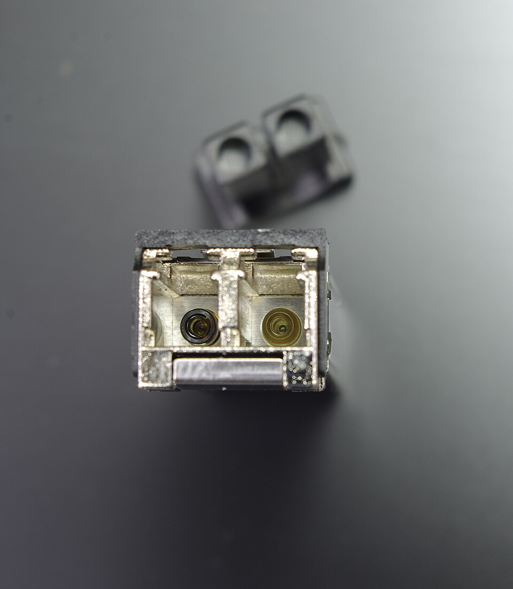

網路線材 Series HOME 選型首頁COPPER 銅纜篇FIBER 光纖篇APPENDIX 附錄↗ PoE PD 受電端系列光纖篇 F1 FIBER 光纖基礎F2 CONNECTOR 接頭與維護F3 MODULE 光模組入門
Network Cabling Series · 光纖篇 F3
光模組：SFP、SFP+ 與 DDMTransceivers · Base-T / SR / LR · BiDi · DDM
1G → 10G
SFP 和 SFP+ 外型完全相同，差在速率：SFP 是 1G，SFP+ 是 10G。插上不同模組，同一個埠就能接網路線、多模或單模光纖。這頁整理怎麼選模組、BiDi 是什麼，以及怎麼從 DDM 讀值判斷光路好壞。
Same cage, different engines. Pick the module, then read its DDM values to judge the link.
1 SFP 與 SFP+ Same size, different speed 兩端要成對 ：同一條光纖兩端的模組類型、速率、波長都要相同（SR 對 SR、LR 對 LR）。1G 的 SX 和 10G 的 SR 雖然都是 850 nm 多模，彼此不能互通。

SFP · 1G（1000BASE-SX） 850 nm 多模、LC 雙芯，標籤寫明 GbE SX 550 m。
Photo: Smial · FAL 
SFP+ · 10G（10GBASE-SR） 外型與 SFP 相同，標籤 10G／850nm／MM／300M。
Photo: Dmitry Nosachev · CC BY-SA 4.0 
並排比較 Cisco GLC-LH-SMD（1G SFP，單模）與 SFP-10G-SR（10G SFP+）：尺寸相同，右後方可見插入籠座的金手指。
Photo: Aurélien Rinaldi · CC BY-SA 4.0 
正面：LC 雙芯插孔 一孔發射（TX）、一孔接收（RX），沒插跳線時要蓋防塵蓋（後方黑色）。圖為 100BASE-FX SFP。
Photo: Smial · FAL
實物照片取自 Wikimedia Commons，依原授權條款標示作者；本站縮圖，部分照片經裁切（已註明）。
3 BiDi：一芯雙向 Bidirectional over one fiber
一般光模組用兩芯（一收一發）；BiDi 用兩個不同波長 在同一芯光纖上同時收發，光纖芯數不夠時很好用。
必須成對使用 ：一端發 1270 nm／收 1330 nm，另一端發 1330／收 1270（常標 U／D 或 A／B）。兩端裝一樣的會不通。
接頭多為 LC 單芯；上圖以 10G BiDi 常見的 1270／1330 nm 為例，1G BiDi 常用 1310／1550 nm。
4 DDM 光功率判讀器 Reading DDM / DOM values DDM（也叫 DOM）讓交換器讀出模組的溫度、電壓、雷射偏壓電流、發射光功率 Tx 與接收光功率 Rx 。輸入你從交換器看到的數值：
1000BASE-SX 1000BASE-LX 10GBASE-SR 10GBASE-LR
Tx＝本端模組送出去的光；Rx＝本端收到的光（由對端模組送來）。兩個值都在交換器的同一個埠上讀得到。
門檻採 IEEE 802.3 規範的平均光功率（Tx 最小／最大、Rx 靈敏度與過載）。模組內建的 DDM 告警與警告門檻依廠商規格書而定，以該值為準。餘裕建議保留 3 dB 以上。
5 拉環顏色與採購 Bail colours & buying
850 nm（多模） 1310 nm（單模） 1550 nm（單模） CWDM／DWDM 依波長各有顏色
修正 ：原《光纖模組完全指南》寫「綠色拉環＝150 km 超長距」，業界沒有這個統一慣例。拉環顏色只是常見做法，各廠牌不一定一致，以模組標籤為準 。
原廠鎖碼 ：部分交換器會檢查模組 EEPROM 的廠商資訊，第三方模組可能被拒絕或跳警告；採購前確認相容清單，或買「指定品牌相容碼」的模組。10GBASE-T 電口模組 ：耗電與發熱比光模組高，多數只能跑 30 m（Cat 6A）；同機櫃短距可改用 DAC。DAC／AOC ：模組和線一體，免清潔接頭，適合機櫃內與相鄰機櫃；25G 以上延伸可參考《Ethernet 1G→800G》簡報。光模組多為 Class 1 雷射 ，仍不要直視 模組或光纖端面。
依據 IEEE 802.3 Clause 38（1000BASE-SX／LX）、Clause 52（10GBASE-SR／LR／ER）、SFF-8472（DDM）與 SFP／SFP+ MSA。拉環顏色為業界常見慣例，非標準規定。